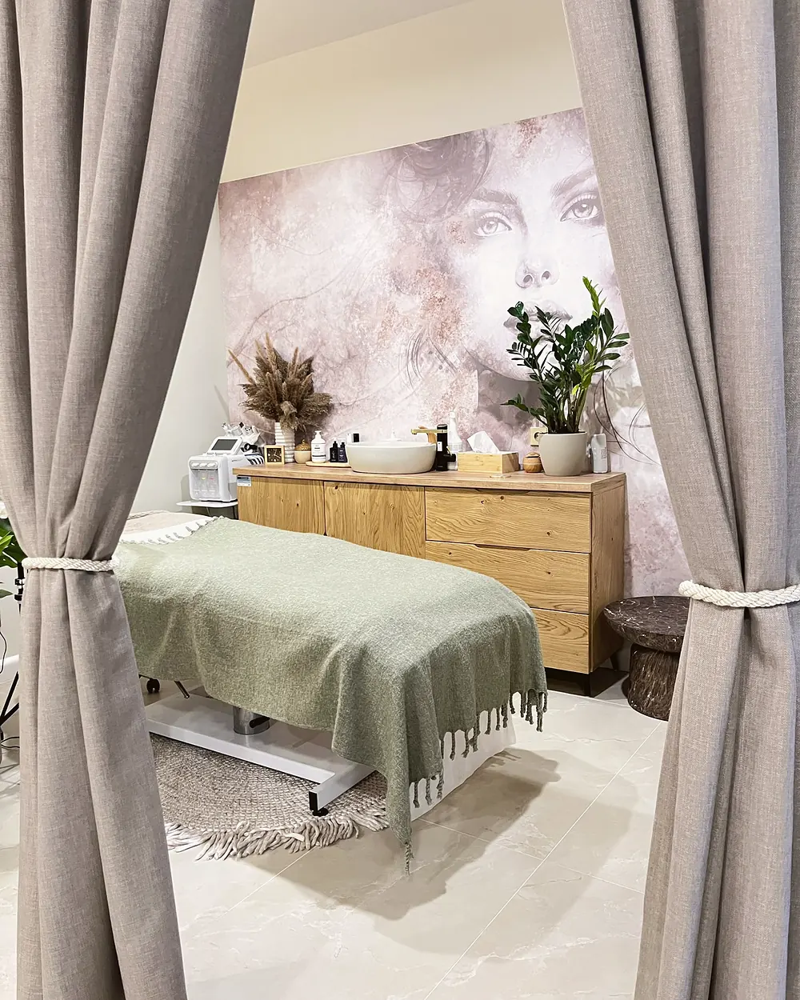
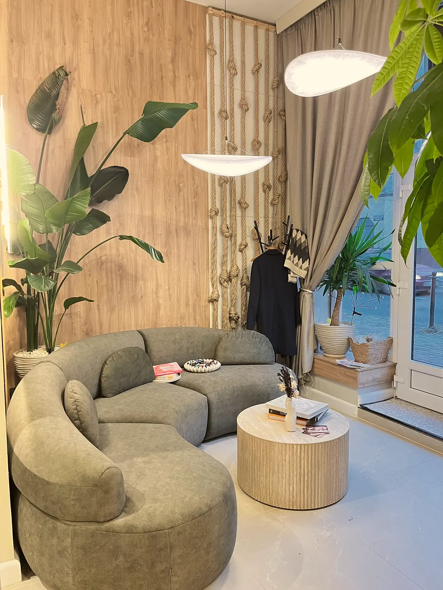
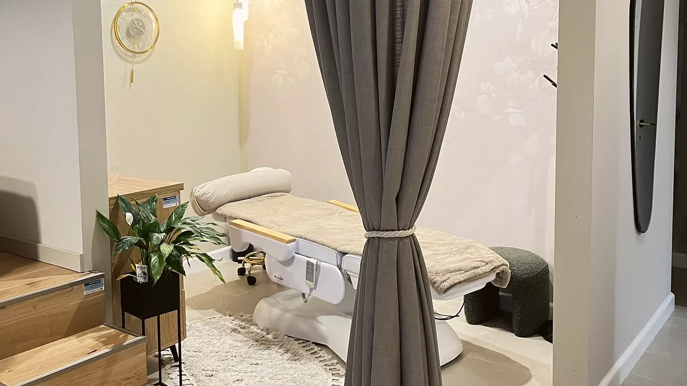
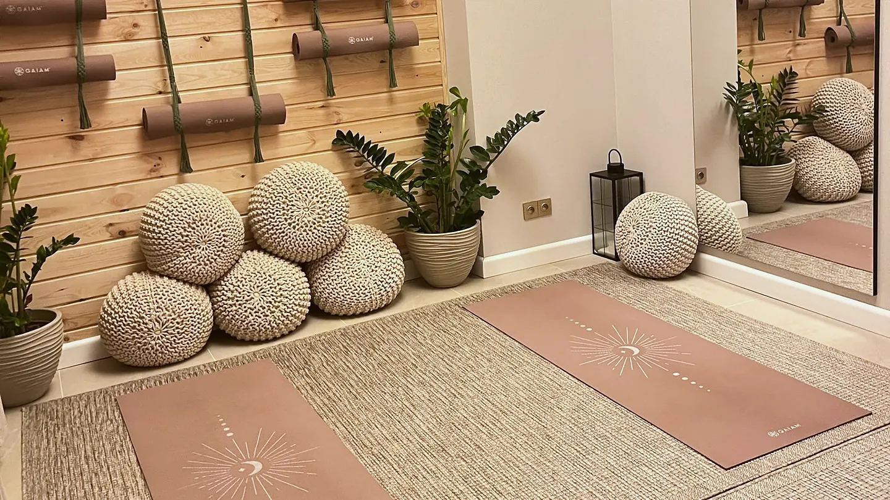
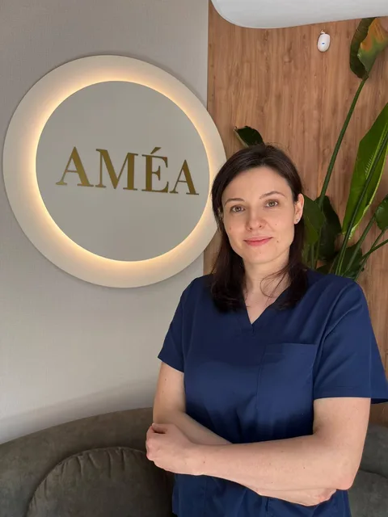
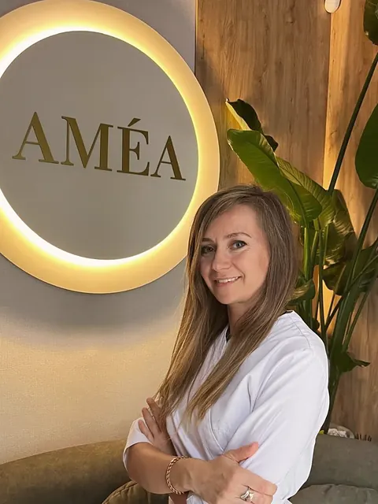
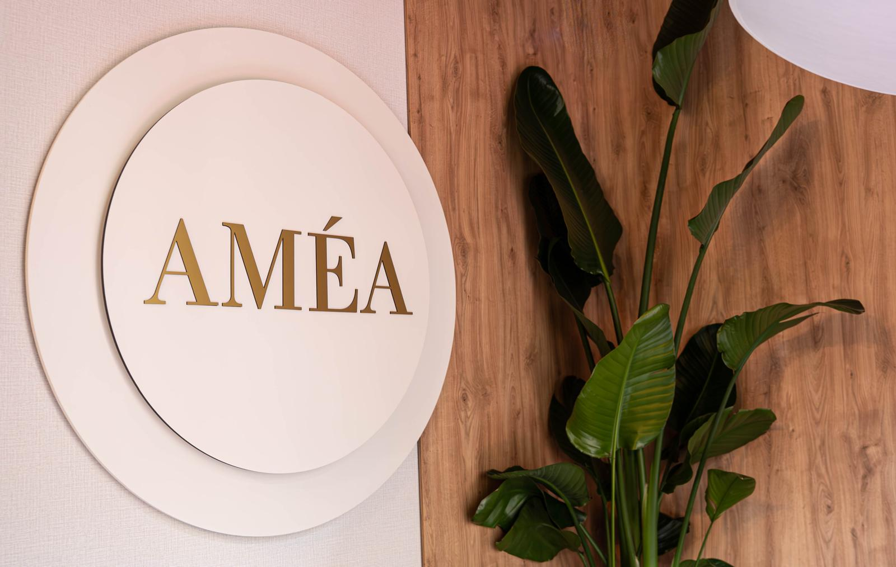

Hydro Barrier
Skóra odwodniona
Napięta, szorstka, bez miękkości, z widocznymi drobnymi liniami.
- Start249 zł
- Advanced389 zł
- Premium469 zł
od249 złUmów
Świadoma troska o skórę, ciało i dobre samopoczucie. Zaawansowana pielęgnacja, fizjoterapia, ruch, masaże i rytuały w sercu Bytomia.

O nas
W sercu Bytomia stworzyliśmy miejsce łączące zaawansowaną pielęgnację skóry i ciała, fizjoterapię, zajęcia ruchowe oraz masaże i rytuały.
Znajdziesz tu nowoczesne technologie, specjalistyczną wiedzę, profesjonalną pracę z ciałem oraz przestrzeń do regeneracji. Wszystko po to, by odpowiadać na różnorodne potrzeby związane z wyglądem, kondycją i codziennym samopoczuciem.

Nasza filozofia
Tworzymy AMÉA we współpracy ze specjalistami z różnych dziedzin. Tam, gdzie to uzasadnione, ich działania wzajemnie się uzupełniają, a każda usługa zachowuje indywidualny charakter.
Skóra
Zaawansowane zabiegi i nowoczesne urządzenia do pracy nad kondycją skóry.
Zobacz ofertęCiało
Wsparcie sprawności i prawidłowego funkcjonowania ciała.
Zobacz ofertęRuch
Siła, mobilność i świadomość ciała w kameralnych grupach.
Zobacz ofertęRegeneracja
Odprężenie, uwolnienie od napięć i czas na regenerację.
Zobacz ofertęDługofalowe podejście do kondycji skóry, sprawności fizycznej i jakości życia. Świadome dbanie o siebie, które uwzględnia obecne potrzeby i perspektywę kolejnych lat.
Od czego zacząć
Skuteczna pielęgnacja zaczyna się od poznania skóry. Na konsultacji określamy cel i układamy plan zabiegów gabinetowych oraz pielęgnacji domowej.
159 zł · 45 MIN
Oferta
Terapie dobrane do problemu skóry. Każda ścieżka ma trzy poziomy, od podstawowej pielęgnacji po zaawansowane technologie: START, ADVANCED i PREMIUM.
Hydro Barrier
Napięta, szorstka, bez miękkości, z widocznymi drobnymi liniami.
Lumi Glow
Zmęczona cera, która potrzebuje odświeżenia i dotlenienia.
Clear Skin
Niedoskonałości, zaskórniki, skłonność do zatykania porów. Twarz, dekolt lub plecy.
Skin Lift
Od bezigłowego RF po termolifting mikroigłowy Ellisys Plus z Dermalux LED. Premium także na okolice oczu, brzuch i bliznę po cesarskim cięciu.
Terapie kolorytu
Wybór terapii poprzedza ocena skóry, bo przebarwienia mają różne przyczyny.
Cosmelan®
Terapia ograniczająca nadprodukcję melaniny: zabieg w gabinecie, kontynuacja w domu i zalecenia fotoprotekcji.
Terapia zaczyna się od wizyty diagnostycznej: wywiad, badanie funkcjonalne i plan dalszego postępowania. Weź ze sobą posiadaną dokumentację medyczną. Każda wizyta trwa około godziny.
wizyta od150 złOcena postawy, zakresu ruchu i napięć; terapia manualna, tkanki miękkie, ćwiczenia.
Zmniejszenie dolegliwości, poprawa ruchomości i funkcji stawu.
Powrót do sprawności dobrany do etapu gojenia i możliwości.
Praca z mięśniami żucia, stawem skroniowo-żuchwowym, szyją i głową.
Gdy przyczyną są napięcia mięśniowe i ograniczona ruchomość szyi.
Praca z blizną, ruchomość barku, terapia obrzęku limfatycznego.
Dla starszych dzieci, młodzieży i dorosłych z asymetriami i zaburzeniami postawy.
Laser biostymulacyjny, ultradźwięki, fonoforeza, prądy terapeutyczne, terapia skojarzona, Bioptron. Jako uzupełnienie terapii.
Masaże terapeutyczne prowadzone przez fizjoterapeutę i rytuały relaksacyjne. Od pracy z przeciążeniem po głębokie wyciszenie.
od90 złTerapeutyczne
Przewlekłe napięcia, przeciążenia, ograniczona ruchomość.
Twarz
Twarz, głowa, szyja, barki i dekolt. Rozluźnia napięcia żuchwy.
Ciepło
Terapia cieplna z masażem: rozgrzanie i rozluźnienie tkanek.
Relaks
Całe ciało lub wybrane partie, 60 lub 90 minut.
Limfa
Kończyna górna lub dolna, m.in. po zabiegach chirurgicznych.
Strefy napięć
Masaż z elementami terapii punktowej dla miejsc najbardziej przeciążonych na co dzień.
AMÉA Women's Ritual · autorskie rytuały
Kameralne zajęcia rozwijające siłę, mobilność i świadomość ciała. Grafik i zapisy prowadzimy w Fitssey, a więcej o zajęciach przeczytasz w sekcji Zajęcia i wydarzenia.
Praktyka dla różnych poziomów zaawansowania.
Siła głębokich mięśni, stabilizacja i postawa.
Joga ze stretchingiem i ćwiczeniami wzmacniającymi na napięcia i ból pleców. Także dla kobiet w ciąży.
Świadomość ciała i kobieca energia.
Spotkania wokół ciała, piękna i równowagi.
Pielęgnacja i praca z ciałem zaprojektowane dla mężczyzn: skóra wymagająca odświeżenia, przeciążone mięśnie, regeneracja.
od180 złAMÉ Men's Skin
Każdy zaczyna się od masażu przygotowującego. Od oczyszczania z LED po Dermapen lub kwasy dobrane do skóry.
AMÉ Men's Ritual
Aromat, pielęgnacja i praca manualna: plecy, głowa albo całe ciało.
Fizjoterapia
Napięcie i sztywność po treningu lub pracy siedzącej.
Makijaż permanentny i hennę pudrową wykonuje Aleksandra. Termin ustalamy telefonicznie pod numerem 791 103 551, a przed pierwszym zabiegiem można wykonać bezpłatną próbę uczuleniową.
Brwi
Trwale podkreślone brwi albo henna pudrowa z geometrią i regulacją.
Usta
Kontur i kolor ust na dłużej.
Korekta i uzupełnienie
Cover starego makijażu wymaga wcześniejszej konsultacji. Dopigmentowanie 5–8 tygodni po pierwszej pigmentacji.
Ceny „od” to ceny regularne. Wolne terminy i wszystkie usługi znajdziesz na Booksy.
Pełny cennik na BooksyGrafik zajęć, karnety i zapisy prowadzimy w Fitssey.
Grafik i cennik w FitsseyPrzestrzeń
Ciepłe światło, naturalne materiały i cisza. Sala do ruchu i medytacji, gabinety zabiegowe i strefa relaksu.





Zajęcia i wydarzenia
Regularne zajęcia wellbeing oraz warsztaty i spotkania dla kobiet. Aktualny grafik, karnety i zapisy znajdziesz w Fitssey, w przeglądarce lub aplikacji.
Zespół
Kosmetolog, założycielka AMÉA

Fizjoterapeutka
Specjalistka makijażu permanentnego

Kosmetolog, rytuały pielęgnacyjne i masaże
Opinie
Piękna przestrzeń w sercu Bytomia. Serdecznie polecam!
Kosmetolog przeprowadziła analizę skóry, trafnie dobrała zabieg oraz poinstruowała odnośnie pielęgnacji w domu.
Z całego serca polecam salon Amea! Zabieg Cosmelan to była jedna z najlepszych decyzji, jakie podjęłam w pielęgnacji swojej skóry.
Bardzo lubię to miejsce! Zawsze tam się mocno zrelaksuję, a zabiegi są fantastyczne.
Bon upominkowy
Voucher na wybrany zabieg, masaż lub rytuał. Zapytaj o bon w salonie.
Masz już bon? Zarezerwuj wizytę na Booksy i wpisz w wiadomości numer lub rodzaj vouchera.
Kontakt

Piłsudskiego 65, Bytom Wyznacz trasę